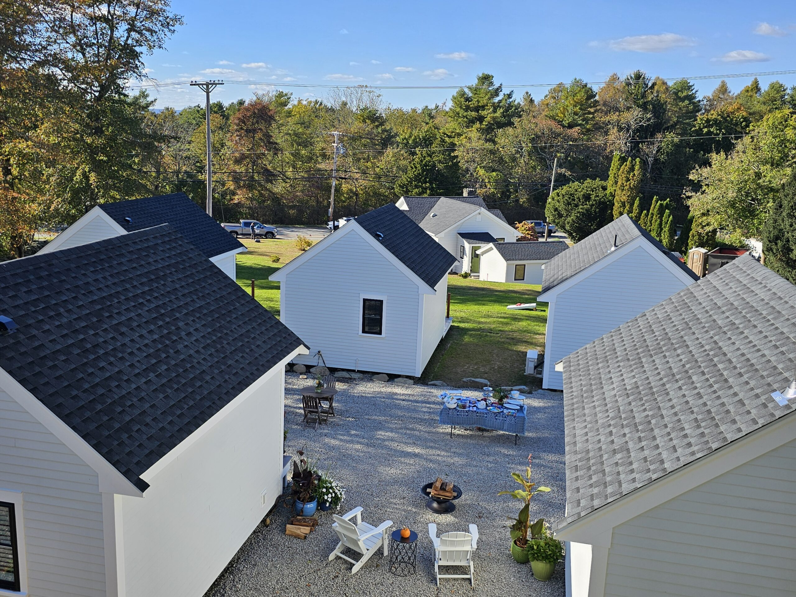

Our story
From RV park to coastal sanctuary.
What was once Twin Lanterns RV Park is now Weathervane Cottages — a labor of love by longtime friends Eric & Cris Offenberg and Kevin & Krissy Coristine.
The name came from seeing weathervanes on beautiful New England homes during a research trip from Rhode Island through Massachusetts, New Hampshire, Vermont, and New York. It felt like the perfect symbol for finding your direction again.
We opened the first four cottages in August 2024. The full property came online in early 2025. Today it is a place where people come to slow down, reconnect, and remember what matters.
— Eric Offenberg, Owner